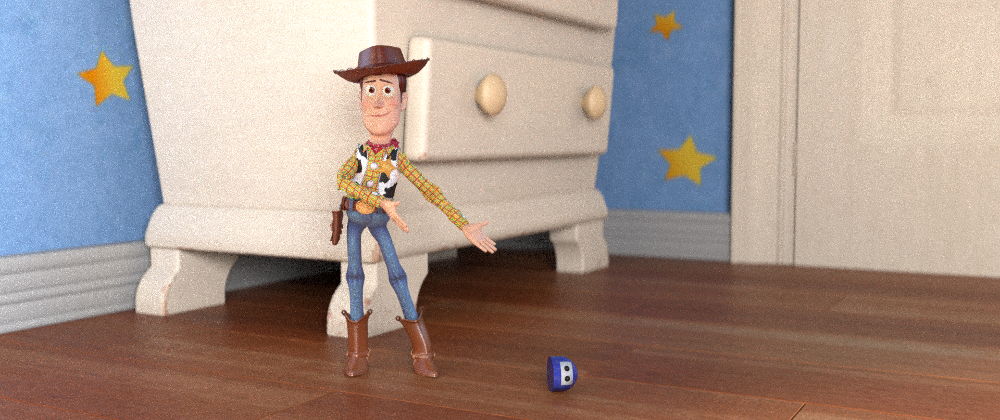
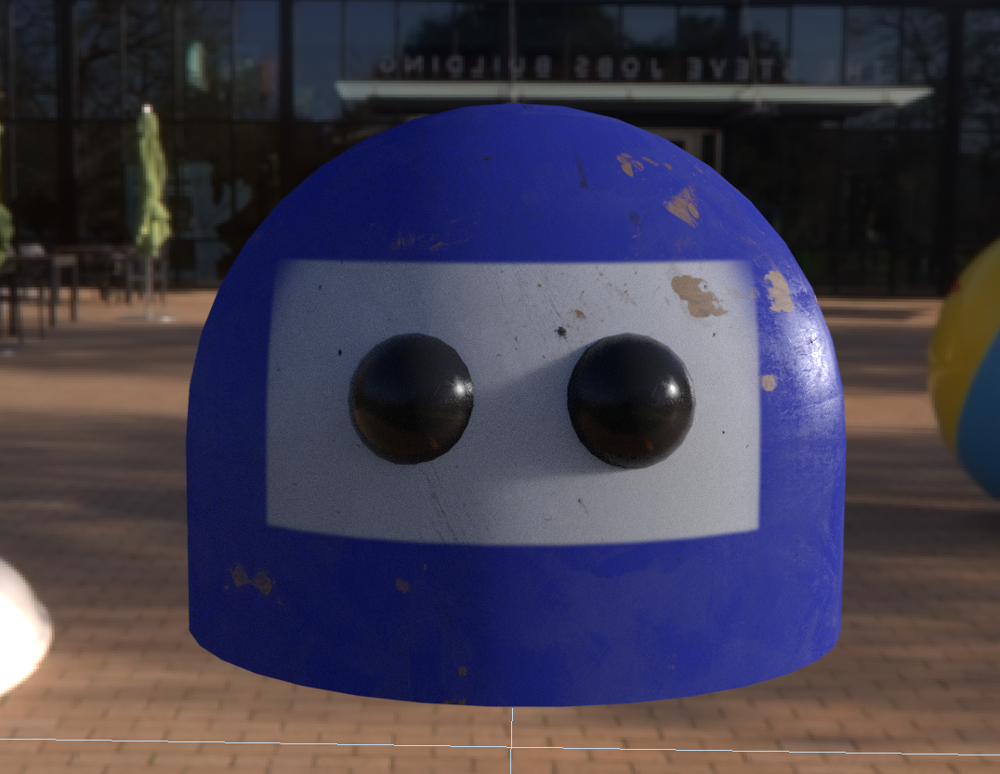
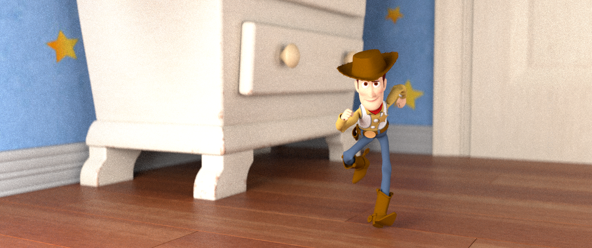
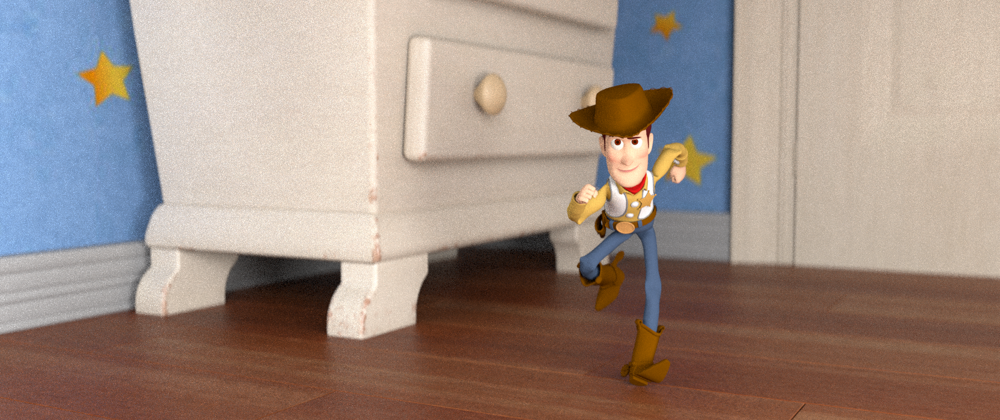
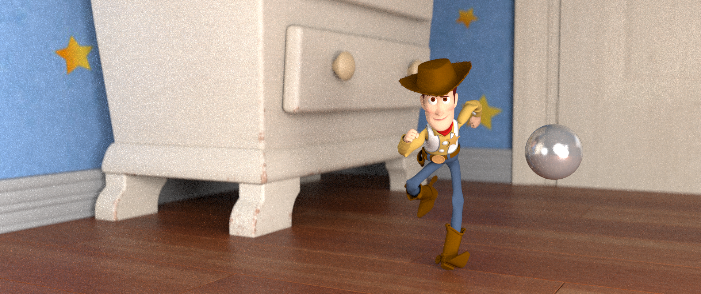
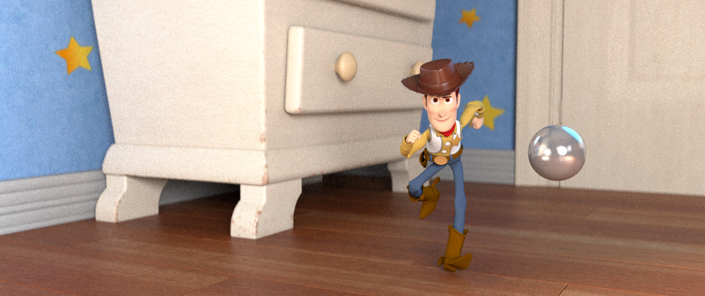

Created by Rendew. Woody © Disney/Pixar
Woody He Slipped
August 12, 2022
Overview
Artifacts and slow renders can be extremely frustrating, especially with a deadline closing in. Without the right tools and techniques, debugging a scene can quickly take longer than one anticipates and steal away precious time one needs to get the actual work done.
In this lesson, I'd like to talk about some basic techniques which can be used to get a better understanding of what's happening in your renders. This allows you to systematically track down problems and bottlenecks. Once resolved, your renders will finish faster and reach a higher visual quality. With this knowledge, you'll be able to anticipate issues while you're building the scene and eliminate them before they even become a problem.
What is Debugging and Optimizing?
Before we start, let's discuss what is meant with the words optimization and debugging in this lesson:
Often, artifacts are intolerable as they prevent you from achieving the desired picture so you often have no choice but to remove them. This can either be achieved by finding the source of the issue and fixing it (the topic of this lesson) or by painting over it in Compositing. Which approach to prefer depends on the situation. If it's just a handful of frames, painting it over in Compositing is usually quicker but you might run into the same issue in the future. If artifacts are present in many frames however, fixing the issue at its core might get rid of it once and for all and improve performance at the same time.
Bad render times, in contrast to artifacts, are tolerable to a certain extent. One could simply wait longer for the renders to finish or buy additional hardware and licenses. However, if you have your render times under control, you improve your productivity and lower your costs. If you need to reach the highest quality possible, there's no way around being resourceful and clever about your setups.
As you can see, debugging is often something you have to deal with, in one way or another. Optimizing on the other hand, you choose to do when you need to increase productivity, lower costs or be able to push even more details into your renders.
The good news is that these processes often go hand in hand. Some artifacts increase the time it takes for a render to finish. By removing them, you might get a cleaner result and improve performance in one go!
Frames: 23. FPS: 24. Working time: 16 hrs. Maya Viewport Playblast.
Typical Artifacts
Users familiar with the older REYES architecture may remember the many different types of artifacts that could appear, depending on the scene setup and techniques used. It required a trained eye to differentiate between them and a good technical understanding to avoid them. Fortunately, this is not the case any more in RIS as the diversity of artifacts is quite manageable.
Now, the most typical artifact we have to deal with is noise in its various manifestations. Depending on the type of noise and its source, we need different techniques to identify and remove it.
What to Expect
We're already telling the renderer at what quality to stop so why do we need additional controls? The reason for having these two additional settings is simply because adaptive sampling isn't perfect. We know that the renderer should stop rendering a pixel if the noise is low enough but how can the renderer know how much noise there is left?
As this information isn't available, RenderMan has to estimate the level of noise by measuring how much a pixel is changing with each iteration. For the first few rays, the pixel is changing color rapidly. Sample after sample, the pixel converges (getting closer and closer) to its true value. Once the variation is smaller than what's been set as a target goal, the pixel is considered done.
While this works fine in most cases, there are situations where things can go wrong. For example, some objects, especially when far away, can be much smaller than a pixel. It's not unlikely, that most of the rays shot for that pixel would completely miss the object.
When this happens at the beginning of a render, RenderMan sees a pixel which isn't changing color at all and it might incorrectly assume that this pixel is clean. This is particularly problematic when rendering an animation as other frames might hit the small object resulting in the object popping in and out of existence.
Overview
I often wondered how people got shots done, from beginning to end, at places like Disney or Pixar. Woody "He Slipped" was an animation test to create and render a shot from beginning to end.
The Bug
First, I created the model for Bug in Maya. Then I took a week surfacing him, also in Maya. After surfacing Bug, I animated him which was not a very smart choice, but it worked out. After a day, Bug's animation was finished.

Frames: 23. FPS: 24. Working time: 16 hrs. Maya Viewport Playblast.
How Hard Can it Be?
In order to make the shot, I needed to finalize the setting. Story-wise, Andy's room was needed. However, the files for Andy's room and the Woody rig were too big, and would crash and break if Woody was copied into Andy's room, or if Andy's room was copied into Woody's rig.
In order to have Woody in Andy's room without copying anything I used a nifty thing called "File Referencing" in Maya. Only five clicks and the files were referenced and everything worked perfectly, including rendering. I also referenced Bug's file, but I decided to copy Bug's file into the Woody rig file so I could have a tangible Bug when animating (especially because Woody "kicks" Bug in the animation). With Woody in the scene, I could start working on surfacing Andy's room.
Andy's Room
Most of the texturing for Andy's room was done in Maya, but in order to make the fine details on the dresser (which I considered a hero model, considering how close it is to Woody) substance painter was used. After baking all the maps and importing into Maya, Andy's room was all surfaced.


Lights, Camera, Action!
After placing the camera, I imported a stand-in Woody with basic phong materials. I gave the camera an anamorphic lens, played with the depth of field a bit, and gave it chromatic aberration. After playing with the light a bit, I decided what I wanted and put a reflective ball so I could see the whole room from the camera. After two days, the lighting was finished.





Animation
After making a stand-in set in the Woody rig file, I began to think about how I would animate. Having to coordinate the timing was tricky. Woody needed to remain at a constant speed, to appear to kick Bug when bug was just about to slip. It helped to have Bug's animation finalized already. I decided to animate from "the kick" backwards to the beginning, and then forward to the end. I positioned Woody in the walk pose, so his foot was in the middle of moving forward, and then animated backwards to the beginning of the animation.
Frames: 23. FPS: 24. Working time: 16 hrs. Maya Viewport Playblast.
Frames: 23. FPS: 24. Working time: 16 hrs. Maya Viewport Playblast.
Frames: 23. FPS: 24. Working time: 16 hrs. Maya Viewport Playblast.